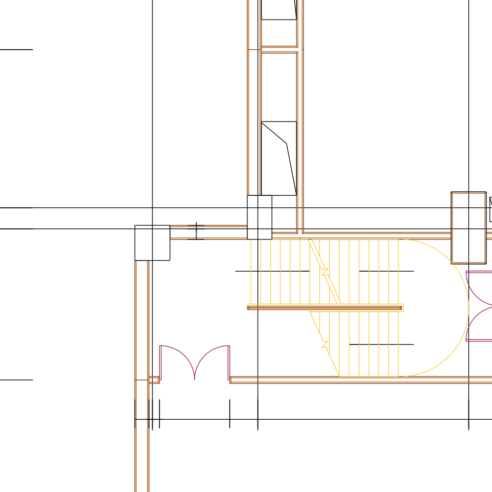

Visualization of the predicted results.
Visualization of the predicted results.
Visualization of the predicted results.

Visualization of the predicted results.
Visualization of the predicted results.

We study the task of panoptic symbol spotting, which involves identifying both individual instances of countable things and the semantic regions of uncountable stuff in computer-aided design (CAD) drawings composed of vector graphical primitives. Existing methods typically rely on image rasterization, graph construction, or point-based representation, but these approaches often suffer from high computational costs, limited generality, and loss of geometric structural information. In this paper, we propose VecFormer, a novel method that addresses these challenges through line-based representation of primitives. This design preserves the geometric continuity of the original primitive, enabling more accurate shape representation while maintaining a computation-friendly structure, making it well-suited for vector graphic understanding tasks. To further enhance prediction reliability, we introduce a Branch Fusion Refinement module that effectively integrates instance and semantic predictions, resolving their inconsistencies for more coherent panoptic outputs. Extensive experiments demonstrate that our method establishes a new state-of-the-art, achieving 91.1 PQ, with Stuff-PQ improved by 9.6 and 21.2 points over the second-best results under settings with and without prior information, respectively, highlighting the strong potential of line-based representation as a foundation for vector graphic understanding.
@misc{wei2025pointlineusinglinebased,
title={Point or Line? Using Line-based Representation for Panoptic Symbol Spotting in CAD Drawings},
author={Xingguang Wei and Haomin Wang and Shenglong Ye and Ruifeng Luo and Yanting Zhang and Lixin Gu and Jifeng Dai and
Yu Qiao and Wenhai Wang and Hongjie Zhang},
year={2025},
eprint={2505.23395},
archivePrefix={arXiv},
primaryClass={cs.CV},
url={https://arxiv.org/abs/2505.23395},
}